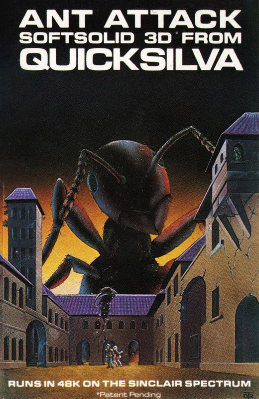
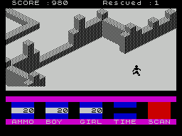
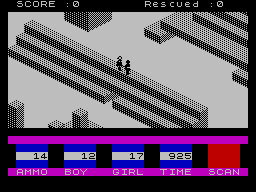
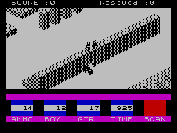
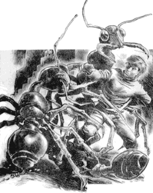

Ant Attack


{kind=link}

| Publisher: | Quicksilva |
| Price: | £6.95 |
| Year: | 1983 |
| Source: | CRASH, Issue 1 |
Sandy White is a quiet Scot and a sculptor by trade. His understanding of three dimensional construction is evident in his game, Ant Attack. Unveiled at the Quicksilva press show, it raised admiring oohs and ahs from the gathering. According to the press release, Quicksilva was so impressed by the stunning quality of the graphics, that they flew Sandy down from Scotland and signed a contract within 24 hours. A patent has been applied for to protect his 3D soft solid routines.
Quite simply, Ant Attack contains the most breathtaking 3D graphics yet seen on the Spectrum; as one of our reviewers pointed out, very similar to Zaxxon graphics, and quite as good as you can see in an arcade.
THIS IS WHAT YOU DO

The idea of the game is to enter the Walled City of Antescher (which has rested for a thousand years in the midst of the Great Desert inhabited only by the deadly ants who have made it their home), and rescue your girlfriend. Actually, it’s a non-sexist program which asks you whether you are a boy or a girl — the cute graphics distinguish between the two and make the main figure a hero or heroine according to taste.
You can walk or run round the massive city which exists in a space many times greater than the playing area. You can also jump up and down and climb the walls or stairs. All this activity is necessary to avoid the giant ants which will attack within moments of your entering. Two weapons are provided; 20 grenades which may be thrown varying distances by pressing keys S-D-F or G and which will either stun or kill an ant depending on your accuracy, and the other weapon is your feet. Jumping up and down furiously on an ant will leave it paralysed and out of the running. Up to five ants attack at one time, but others will appear to replace the inactive ones. You can stand being bitten quite a bit, but too many bites will eventually result in loss of life!
GENERAL

The graphics are really stunning. The soft solid bit refers to the 3D effect achieved, not only with the buildings, which are all made up of blocks, hundreds upon hundreds of them, but also with the two humans and the ants. If your characters disappear behind a building you can press any of four keys (O/P/ENTER/SPACE) which will give you a view of the same location from another compass point. The effect is very like a scene in a TV studio where you can look at the action from four differently placed cameras. The cutting from view to view occurs instantaneously and without a flicker.
The excellence of the 3D is also seen when your characters are surrounded by ants. The individual elements of the picture all merge in a most realistic manner, so much so that it’s hard to tell who is who at times, and this adds to the difficulty of the game.
CRITICISM

‘The animation of the figures must be the best yet seen on the Spectrum.’
‘The most serious drawback to enjoying the game is the handful of control keys required. Four keys for the different view angles, four keys to throw grenades, two keys to rotate left and right, another for forward movement and another for jumping. It makes twelve in all. They are quite difficult to manipulate.’
‘It’s an extremely good game with plenty of action, but a little difficult to control at first.’
‘I found it totally confusing at first with all those keys and no joystick that could possibly help, but it’s so wonderful to look at that you’re bound to persevere.’
COMMENTS

| Keyboard positions: | Highly complicated to master, though reasonably logical in placing. Perhaps a North/South/East/West system might have been easier |
| Joystick option: | None possible |
| Keyboard play: | Very positive |
| Use of colour: | Varied opinions, but averaged out as good |
| Graphics: | Excellent |
| Sound: | Good |
| Skill levels: | None |
| Lives: | Can be bitten 20 times |
| General rating: | Very highly recommended |
| Use of computer: | 60% |
| Graphics: | 100% |
| Playability: | 95% |
| Getting started: | 80% |
| Addictive qualities: | 80% |
| Value for money: | 95% |
| Overall: | 85% |